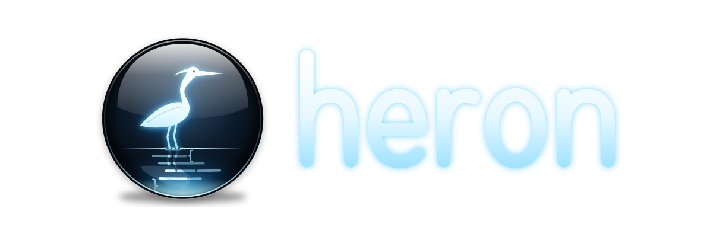
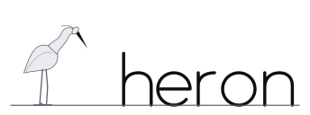
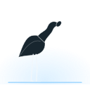
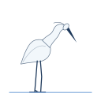
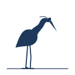
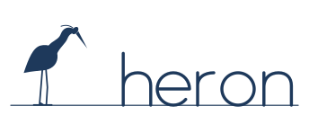
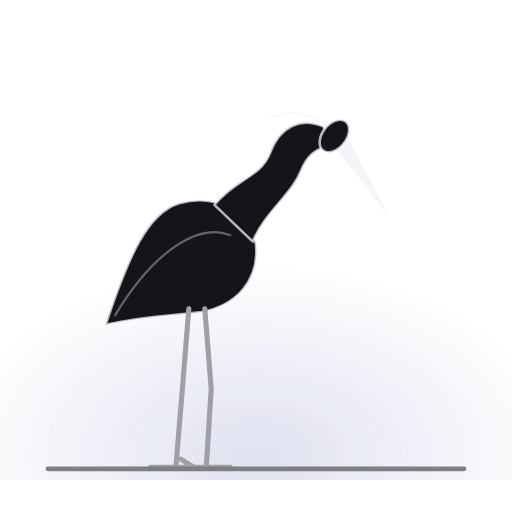
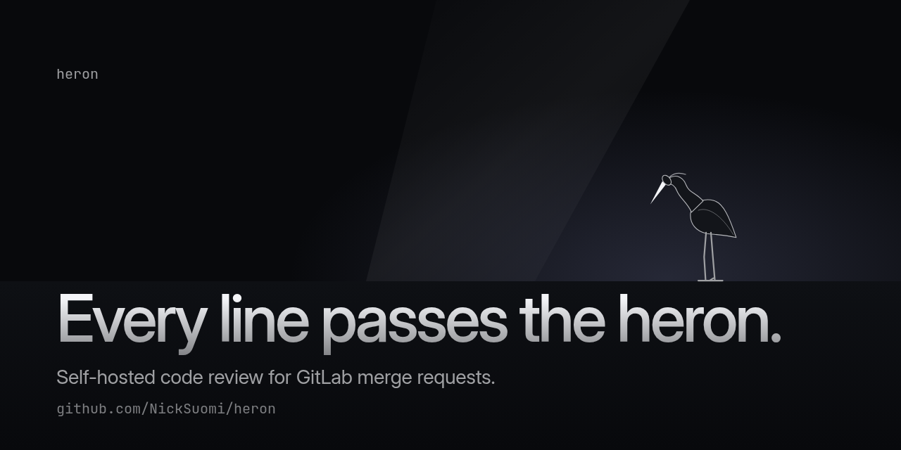

Design book
The fold is the gate.
The site is one face of a dark monolith. Code climbs it and folds over the top edge, where the heron stands and looks down at what comes over. Lines it objects to are marked once, then pinned as findings. When the face lies flat at the end, the verdict is what remains.


Principles
Still, exact, calm.
- Stillness first. The brand moves only when the reader scrolls, and the heron moves once.
- Point at the line. Every finding names a path and a line at the reviewed head.
- Calm is a feature. CHANGES REQUESTED is ordinary news.
- Stable words for machines: PASS, CHANGES REQUESTED, BLOCKED, SUPERSEDED.
- Nothing leaves the page: no external fonts, scripts, images, or trackers.
Colour
Night, hairlines, and one cold light.
A near-black with a slight cool tint, three raised surfaces, grey text set by opacity, and one accent: plume #9097CC, the blue-grey of a grey heron's back at dusk. It is desaturated so it reads as light, not as a brand colour competing with the code. Plume marks only what the heron looks at: a caught line, a pinned finding, the verdict, the rim light.
#08090CPage base#0E1014Bands, code#13151ACards, the heron's body#1A1D23Hover, active rows#1C1D1F1px borders, white at 8%#2B2B2ERim and emphasis, white at 14%#F4F5F8Primary text#9FA0A3Secondary text, 64%#7E7F82Tertiary text, 50%#454649Line numbers, 26%#9097CCThe accent#3B4070Accent fills, glows#86B8A5PASS#D2B48CCHANGES REQUESTED, outside the site#D48F8FBLOCKED#F7F8FALight background#DCDEE3Borders on light#0D0E12Text on light#5B5F6BSecondary on light#4C5391Accent on light#2F6B55PASS on light#7A5520CHANGES REQUESTED on light#9A3B3BBLOCKED on lightContrast, WCAG 2.x
| Theme | Pair | Sample | Ratio | Grade |
|---|---|---|---|---|
| dark | text on bg | Aa | 18.26 | AAA |
| dark | text on surface | Aa | 16.75 | AAA |
| dark | text on code-bg | Aa | 17.47 | AAA |
| dark | text-muted on bg | Aa | 7.61 | AAA |
| dark | text-muted on surface | Aa | 6.98 | AA |
| dark | text-faint on bg | Aa | 4.97 | AA |
| dark | accent on bg | Aa | 7.10 | AAA |
| dark | accent on surface | Aa | 6.51 | AA |
| dark | pass on bg | Aa | 8.92 | AAA |
| dark | changes on bg | Aa | 10.10 | AAA |
| dark | blocked on bg | Aa | 7.70 | AAA |
| dark | superseded on bg | Aa | 7.61 | AAA |
| light | text on bg | Aa | 18.15 | AAA |
| light | text on surface | Aa | 18.15 | AAA |
| light | text on code-bg | Aa | 18.15 | AAA |
| light | text-muted on bg | Aa | 6.00 | AA |
| light | text-muted on surface | Aa | 6.00 | AA |
| light | text-faint on bg | Aa | 6.00 | AA |
| light | accent on bg | Aa | 6.69 | AA |
| light | accent on surface | Aa | 6.69 | AA |
| light | pass on bg | Aa | 5.89 | AA |
| light | changes on bg | Aa | 6.28 | AA |
| light | blocked on bg | Aa | 6.45 | AA |
| light | superseded on bg | Aa | 6.00 | AA |
Typography
Inter, and JetBrains Mono for code.
Every line passes the heron.
Inter, variable with the optical-size axis: display at weight 520 with -0.045em tracking and gradient text, headings at 500, body at 400. JetBrains Mono for code and paths, with ligatures off.
src/projects/archive.ts:14 await api.delete(`/projects/${id}`)
| Family | Use | Licence |
|---|---|---|
| Inter | Display, headings, text | SIL OFL 1.1, licence |
| JetBrains Mono | Code, paths, the marker | SIL OFL 1.1, licence |
The heron
A duotone silhouette on the rim.
The heron stands on an edge, neck in an S, bill pointed down over the edge. A night body, a frost edge line, a solid bill, one-line legs, and a faint plume glow behind the feet. It has no eye, and it never gets one. On the site it faces into the page; in the mark it faces the wordmark. Both stand on the same rim line as the drawn wordmark.

heron-mark-on-dark.svg
heron-mark.svg



heron-mark-mono-ink.svg


heron-lockup-mono-ink.svg


heron-mark-512.png
Social preview

Do not add an eye or a face, colour the bird with the accent, rotate or stretch it, set the wordmark in a font, or animate it idling.
Motion
Only the scroll moves the page.
- The fold: Canvas UI Bend folds the face out over its top and bottom edges, a quarter of the viewport each, to 84 degrees with a rounded crease. Each edge flattens near its end of the scroll.
- Without HTML-in-canvas, CSS scroll-driven animations tip each line over the same zones.
- A caught line gets one plume underline in 260 ms. Its finding plate lights up over 700 ms. The heron strikes once per visit, when the blocker crosses the edge.
- Nothing loops, autoplays, or follows the cursor.
- With reduced motion, the fold animation and the strike are off and every finding is shown pinned.
Voice
A patient reviewer who read the whole change.
Calm, plain, exact. Name the path and the line, say what happens, then suggest the fix. No hype, no scolding, no exclamation marks, no emoji, no long dashes. Page copy only states what the Heron docs state.
| Do | Don't |
|---|---|
Archive deletes the project instead of archiving it (src/projects/archive.ts:14). | Critical bug!!! You deleted everything. |
The review could not finish: session b1.gate.spec failed. | Something went wrong. |
The source branch moved during the review. These results describe abc2c194 only. | Outdated review, ignore. |
The verdict
CHANGES REQUESTED
The verdict words never change, so scripts can match them. On the site the verdict takes the one gradient from soft white to plume.